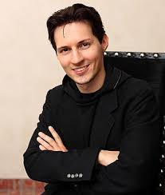

UAE BIGGEST BILLIONAIRE:- PAVEL DUROV

Pavel Durov is a Russian-born tech entrepreneur renowned for founding VK (VKontakte), Russia's largest social network, and Telegram, a globally popular encrypted messaging app.
His unwavering commitment to digital privacy and resistance to governmental pressures have made him a prominent figure in the tech industry.
👶 Early Life & Education
Born: October 10, 1984, in Leningrad (now Saint Petersburg), Russia.
Childhood: Spent formative years in Turin, Italy, due to his father's academic career.
Education: Graduated with honors in philology from Saint Petersburg State University in 2006.
Family: His father, Valery Durov, is a respected academic, and his brother, Nikolai Durov, is a mathematician and co-founder of Telegram.
🧑💻 Career Milestones
VKontakte (VK)
Founded: 2006, inspired by Facebook's model.
Role: CEO until 2014.
Achievements: Grew VK into Russia's leading social network.
Departure: Resigned in 2014 amid governmental pressures and disputes over user data privacy.
Telegram
Founded: 2013, alongside his brother Nikolai.
Purpose: To offer a secure, encrypted messaging platform free from governmental surveillance.
Growth: As of March 2025, Telegram boasts over 1 billion monthly active users.
Monetization Attempts: Launched the "Gram" cryptocurrency and Telegram Open Network (TON) in 2018, raising $1.7 billion.
However, the U.S. SEC halted the project, citing violations of securities laws.
🌍 Citizenship & Residence
Citizenships:
Russia (by birth).
Saint Kitts and Nevis (acquired in 2013).
United Arab Emirates (since 2021).
France (naturalized in 2021 under the "foreigner of merit" provision).
Current Residence: Dubai, UAE, where Telegram's headquarters are located.
💰 Net Worth & Recognition
Net Worth: Estimated at $15.5 billion as of August 2024, ranking him among the world's wealthiest tech entrepreneurs.
Accolades:
Named the richest expatriate in the UAE by Forbes in 2022.
Recognized as the most powerful entrepreneur in Dubai by Arabian Business in 2023.
⚖️ Legal Challenges
Arrest: On August 24, 2024, Durov was arrested at Paris–Le Bourget Airport by French authorities.
Charges: Indicted on 12 counts, including complicity in the distribution of illicit materials and failure to cooperate with judicial authorities regarding Telegram's content moderation policies.
Legal Proceedings:
Released on a €5 million bail.
Placed under judicial supervision, with restrictions on leaving France and mandatory weekly police check-ins.
In March 2025, granted temporary permission to leave France for several weeks.
🧬 Personal Life
Lifestyle: Known for his minimalist approach, claiming to live on a modest income despite his billionaire status.
Family:
Unmarried.
Reportedly has five children with former partners.
Has publicly stated fathering over 100 children through sperm donation.
🧭 Ideology & Public Image
Philosophy: A staunch libertarian, Durov advocates for internet freedom, user privacy, and minimal governmental interference.
Public Stance: Refuses to comply with governmental requests for user data, positioning Telegram as a bastion for free expression.
Criticism: Faces scrutiny over Telegram's use by extremist groups and its perceived lack of content moderation.
Click Here For More Billionaire